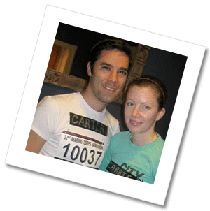

Friday
Honkey Tonk and two-step at the Broken Spoke!
The venerable Broken Spoke has always reigned supreme as Austin’s country music palace. When you need your Lone Star cold, lots of sawdust on the floor, and the ghost of Ernest Tubb on your shoulder, the Spoke is it. Bring your cowboy boots (and your camera) – you definitely don’t want to miss this.
Where: The Broken Spoke (3201 South Lamar, Austin, TX 78704)
When: 8pm
Tables will be set aside in the dancehall for the Knittel/Rabasa party. When you arrive, be sure to indicate that you are part of the Knittel/Rabasa party so that you won’t have to pay the cover charge. Doors open at 7:30, and for a few bucks you can get a dance lesson at 8pm.
Saturday
We’re getting married!!! Please be at House on the Hill by 6pm. The ceremony will start at 6pm.
Sunday
Recovery Brunch!
Cuatro’s is our neighborhood hangout. Come sit outside and have some breakfast tacos and mimosas with us before leaving Austin.
Where: Cuatro’s (1004 24th St, Austin, TX 78705)
When: 11am – 1pm
Recent Comments